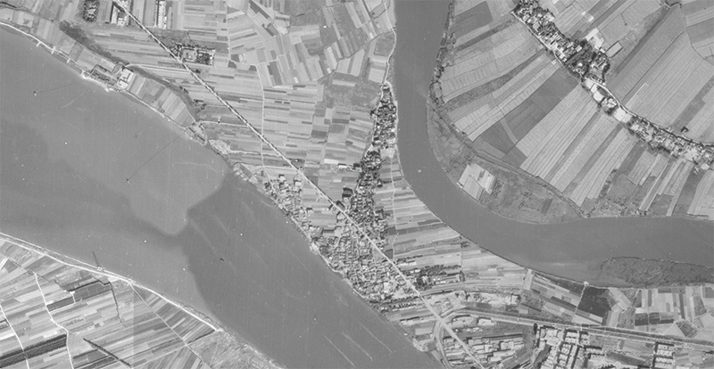
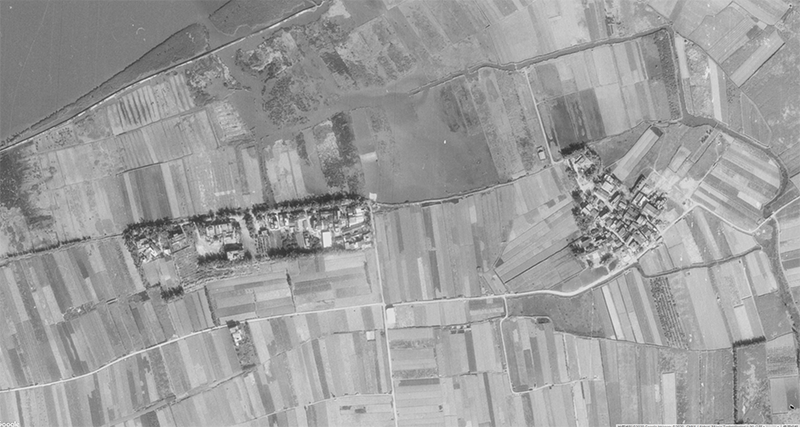
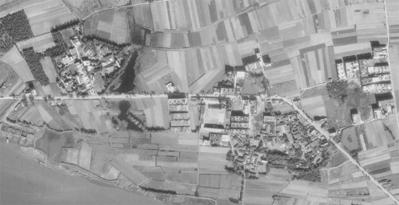
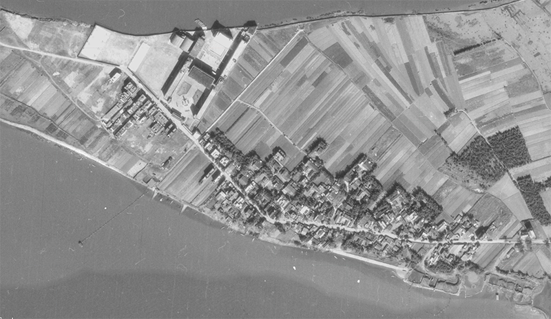

社子島約在清康熙年間(約300多年前)，由臺北湖中漸漸浮出的一塊沙洲島，所以社子島的原始地名大多與河川新生地的形成有關，例如：溪州底、浮洲仔、溪沙尾、浮汕都是如此。地方耆老也習慣使用這些地名來稱呼自己居住的庄頭，也以此做為標示地理位置的記號。
| 大地名 | 小地名 | 所在路段 | 所在巷弄 | 地名故事 |
| 溪洲底 | 中窟 (頂竹圍) |
延平北路七段 | 27巷、63巷 | 日治時期日軍在27巷底挖掘三個窟窿，準備停放水上飛機，一座在27巷25弄6號附近，一座在27巷26號前，一座在7段63巷12弄8號前20公尺處。因為位於中間的窟窿，稱為中窟，並有頂庄頭、頂竹圍之稱。 |
| 中圈 (戲臺口) |
63巷至107巷 | 民國48年(1959年)開業的皇宮戲院就位於107巷巷口，以表演傳統戲曲為主要演出內容，有可容納500人的座位，是當時社子地區最具規模的娛樂場所。 | ||
| 店仔口 | 106巷口 | 溪洲底繁榮的鬧區，有許多商店。 | ||
| 下竹圍 (港墘仔) |
145巷、177巷 | 107巷至145巷底就是渡船頭，過去是以水運為主的時代，，賣菜船、交通船、養鴉船、載水肥船各式各樣的舢舨船都匯集於此，這裡也是從滬尾通往艋舺航線的中繼站。 | ||
| 塭寮 | 106巷52弄以北 | 1.在許英媽廟前是一大片稻田，當時灌溉的水源是來自106巷86弄底的泵浦抽基隆河水來灌溉。 2.即是塭水灌溉。 |
||
| 八卦厝 | 106巷327弄 | 位於溪州底北側的基隆河岸，曾出現於1898年《臺灣堡圖》的地圖中。 | ||
| 浮洲 | 頂浮洲 | 延平北路八段 | 2巷200弄 | 從河裡浮出的沙洲，也就是過去以鹹草圍田造地，加上河道淤積所形成的河川新生地。 |
| 下浮洲 | 2巷153弄 | |||
| 溪沙尾 | 頂溪沙尾 | 溪沙尾範圍大致在平落溝（八段2巷）、窟仔頭（八段45號前）、崩坑（鎮安宮前）這三條溪溝的終點匯集處。溪沙尾可分為頂溪沙尾、下溪沙尾兩部分，中間以一條小河作為界線，這條小河水深夠深，當時能讓船隻進出，一直 到了民國52年(1963年)葛樂禮颱風之後，這條小河才淤積填平。 | ||
| 下溪沙尾 | ||||
| 沙埔 | 依照沙洲形成的先後順序而命名。 | |||
| 崩坑 | 早期在鎮安宮前有一條內河溝通過。 | |||
| 浮汕 | 中洲埔 | 延平北路九段 | ㄧ塊從河裡浮起來的沙線，範圍就在威靈廟到島頭公園。 |
1974年的溪洲底航照影像

1974年的浮洲航照影像

1974年的溪沙尾航照影像

1974年的浮汕航照影像

資料來源：
社子島美學會文史資料、社子文教基會文史資料、富安國小鄉土教學文史資料、
中央研究院人文社會科學研究中心地理資訊科學研究專題中心：臺北市百年歷史地圖

- 我家住在坤天亭後面，但是我還是不知道我家這裡的舊地名是什麼?老師說過，舊地名的來由可能會很多，我們可以從中知道地名跟地形或是地名與社會人文之間的關聯。所以我才很想知道，我會再去尋找資訊的。！